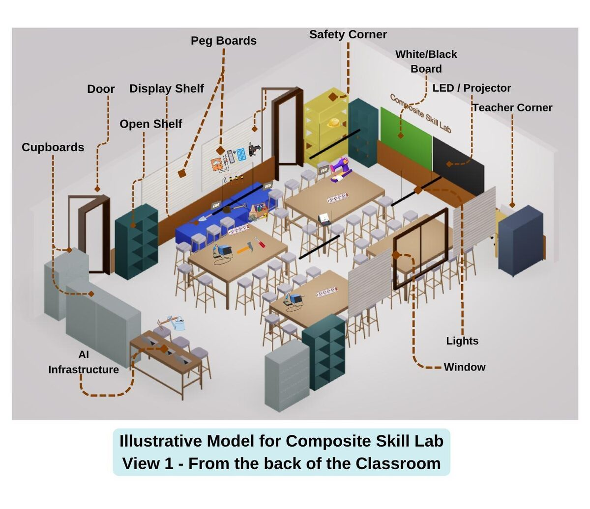
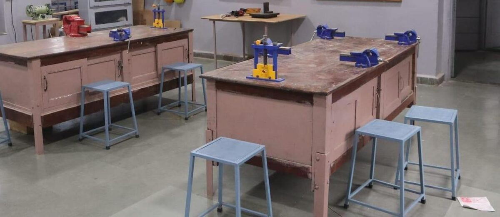
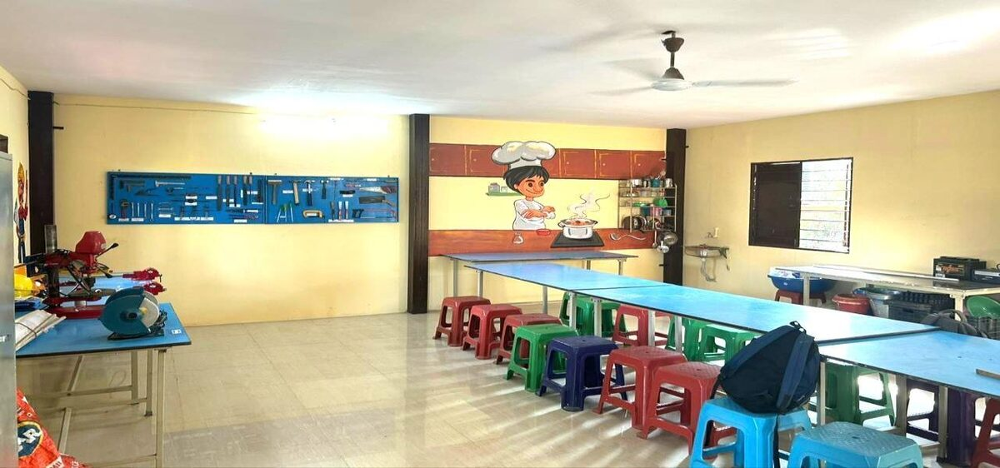
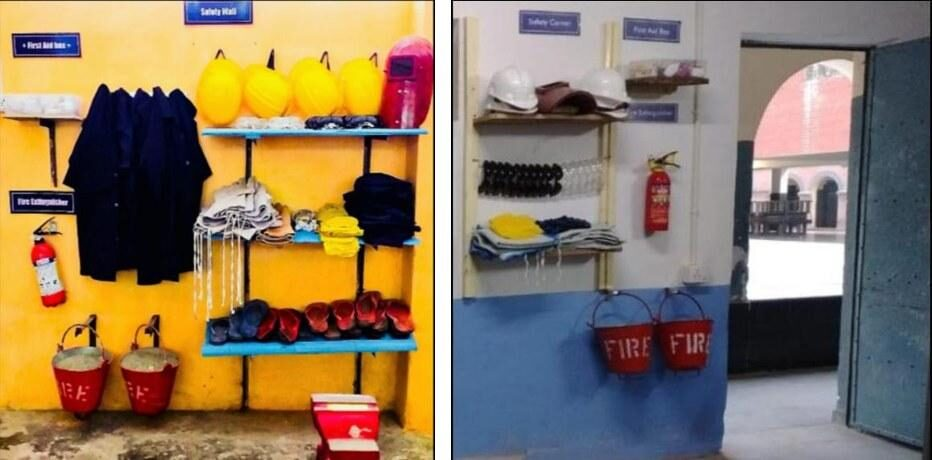
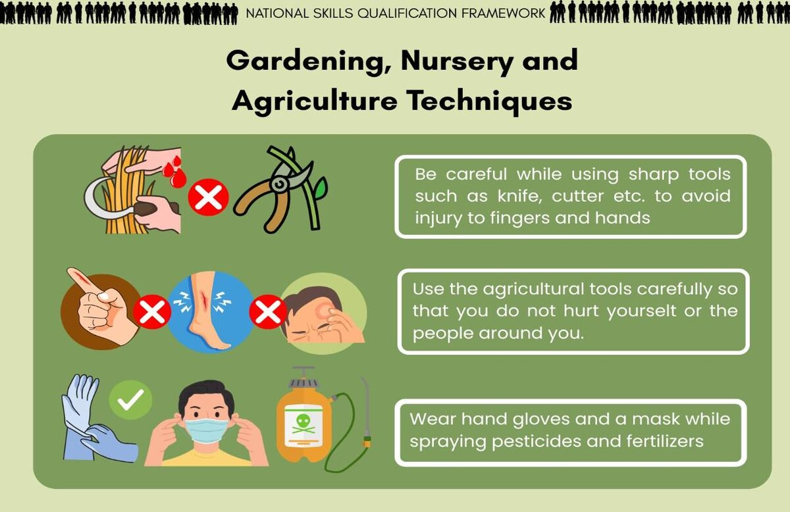

CBSE’s 70-page Guidelines for setting up Composite Skill Lab in Schools (2026–27) are detailed, practical and easy to skim past. This post pulls out what a principal needs to sign off, element by element, with a checklist at the end. Use it if you are asking what a Composite Skill Lab needs, or how to set up a skill lab in a school. (Lend A Hand India contributed technical inputs to the guidelines, and many of the lab photos in them are from our work.)
The CSL at a glance
| Element | What CBSE recommends |
|---|---|
| Deadline | Existing CBSE schools to have a CSL by 22 August 2027 |
| Who uses it | All students, Classes 6–10, for 110 hours of skill education a year |
| Skill Projects/ Vocations | At least 3 per class, covering all three forms of work: life forms, machines and materials, human services |
| Room size | One room of at least 600 sq ft for Classes 6–12, or two rooms of at least 400 sq ft (one for 6–10, one for 11–12) |
| Batch size | Space for 25–40 students working safely |
| Location | Ventilated, two clear walls for displays, water and drainage, ideally next to open ground for gardening |
| Design | Modular, using a toolkit approach so subjects can change over time |
| Indicative cost | About Rs 3–6 lakh, depending on subjects, room size and furniture |
| Must-haves | Group worktables, storage, pegboards, sector zones and signage, a safety corner, safety posters; Digital display for Videos / presentations |
| Recommended | AI-ready computers, as CBSE urges all schools to build AI infrastructure into the CSL. |

1. Choose skill subjects before anything else
Every other decision follows from this one: the tools, the zones, the signage, even the safety gear. CBSE asks schools to choose at least three skill subjects that together cover all three forms of work, based on:
- the school’s local context and its students’ aspirations;
- what you can actually teach: tools, raw materials and teacher skills;
- local businesses that can host visits, send guest experts or offer future work.
The guidelines describe 13 illustrative sectors, with a tool list for each, which together work as a Composite Skill Lab equipment list:
| Form of work | Illustrative sectors in the CBSE guidelines |
|---|---|
| Work with life forms | Agriculture and gardening; food production |
| Work with machines and materials | Electronics and mechatronics; apparel; automotive; shaping materials; IT and ITeS; AVGC and media content creation |
| Work in human services | Healthcare; beauty and wellness; retail; banking, financial services and insurance; tourism and hospitality |
The annexure tool lists are now grouped the same way, so it is easy to check that your plan covers all three columns.
2. The room
Pick the room for the work, not just the floor area. CBSE’s infrastructure requirements:
- Size: 600 sq ft (or two 400 sq ft rooms), enough for 25–40 students to work with tools safely.
- Flooring: concrete or rubber mats that can take heavy loads. Avoid vitrified tiles and stone. Add anti-slip flooring near water and anti-static mats near electronics.
- Power: a mix of 15-amp and 5-amp sockets, preferably on every wall, with cable trays so no wires cross the floor. Keep plugs and switches away from water.
- Light and air: windows, exhaust fans, good lights and fans.
- Water: a sink with drainage, essential if you chose food, health, beauty or gardening. CBSE suggests a 37 × 18 × 8 inch sink set in a 4 × 3 ft platform.
- Walls: at least two clear walls for pegboards and posters. Light base paint, with tiles or contrasting paint up to 3 ft for durability.
- Exits: two wide doors for an unobstructed exit.
- Location: ideally beside open ground, so gardening projects can start at the door.
3. Layout and zoning
Think of the CSL as one shared work floor ringed by sector zones. Group worktables sit in the centre. Each sector gets its own zone along the walls, with its pegboard, storage and signage. The safety corner sits by the entrance, and the sink and wet work sit away from electrical points.
CBSE’s guidelines include four model layouts, two for 400 sq ft and two for 600 sq ft, plus a 3D illustration. Use them as a starting point and adjust them to your room’s actual dimensions. Keep the layout modular, so a zone can switch subjects later without rebuilding the room.

4. Furniture, storage and pegboards
A CSL serves many subjects, so what matters most is that tools are safe, visible and easy to put back. CBSE’s suggested specifications, based on a 30 × 20 ft lab:
| Item | What to look for |
|---|---|
| Working tables | For group work, 6–8 ft × 4 ft × 30 in high, with a steel frame and an 18 mm laminated ply top. Edges rounded, heavy tools mounted where needed. |
| Stools | Stackable 12 × 12 × 20 in steel stools with rubber levellers, so the floor can be cleared for standing work. |
| Tool pegboards | 4 × 3 ft, 18 mm waterproof ply, labelled sections, arranged by category so students learn tool names by sight. |
| Wall cupboards | 78 × 36 × 24 in steel, with glass or labelled doors and four adjustable shelves. One toolkit per skill subject. |
| Open shelves | Low wooden shelves, 2 ft high and 2 ft deep, for large equipment and students’ work. Mix heights for Classes 6–10. |
| Containers | Labelled, stackable boxes inside cupboards. Picture labels help younger students. |
| Teacher’s desk and cupboard | A 3 × 2 ft desk and a lockable 48 × 36 × 18 in cupboard for handbooks and stationery. |
| Display | An LED screen or projector with HDMI, USB and wireless input, plus internet for online sessions with mentors. |
| Whiteboard | For daily instructions, schedules and tasks. |
The guidelines also stress keeping a tool inventory. A lab in-charge who checks stock and condition every term is what keeps the lab usable.

5. Sector signage and “speaking walls”
Signage is easy to treat as decoration. In a CSL it does real work: it tells a Class 6 student where the gardening tools live, reminds a Class 9 student of the safety rules, and shows visitors that this room covers many kinds of work. CSL Guidelines asks for:
- Sector zone labels. A clear sign over each zone, such as Gardening, Healthcare, Food Processing or Electronics, using wall decals or paint with simple icons. Bilingual signs (English and the local language) help every student.
- Labelled pegboards and storage. Tool names on the pegboard outline, and contents or pictures on every cupboard and box.
- Murals and skilling visuals. CBSE encourages murals of people at work, in bright, warm colours, to make the lab inviting.
- Inspirational wall. A line or two of learning goals, such as “Learn by doing”.
- Display space for students’ work. Projects, process photos and Kaushal Mela products build pride and spark peer learning.
Keep wall signs in place, and rotate the student work displays every term so the walls stay current.

6. Safety: corner, posters, drills and roles
Safety gets a full chapter in the guidelines, and it is the element visitors and parents notice first.
The safety corner. Place a safety rack near the entrance so gear can be grabbed fast in an emergency. CBSE suggests an iron rack of 48 × 48 × 18 in with three shelves, holding helmets, gloves, PPE kits and footwear. Hang a fire extinguisher and two sand buckets on the wall beside it, and add gear for your chosen subjects.

Minimum safety kit for a class of 40:
| Item | Specification | Quantity |
|---|---|---|
| Fire extinguisher | CO2, 2 kg, ABC type | 1 |
| First aid box | Cotton, bandages, gauze, scissors, antiseptic | 1 |
| Hand gloves | Sturdy, washable, for electrical, gardening and shaping materials work | 15 |
| Aprons | Small and medium, for students | 15 |
| Rubber matting | On the floor either side of each workbench | 8 |
| Sand bucket | 10 litres | 2 |
Safety posters. Display clear do’s and don’ts at prominent spots, with bright colours and simple visuals. The guidelines include sample posters for sectors such as energy and environment, and gardening, nursery and agriculture. Display emergency numbers and mark fire exits clearly.

Built-in safety. Label every tool and machine with usage and hazard notes. Fit emergency stop buttons on machines and surge protection on workstations. Use heat-proof surfaces for irons, lockable ventilated cabinets for fertilisers and pesticides, sharps and bio-medical waste containers, and a handwashing station.
Drills and roles. Run regular evacuation and fire drills. The guidelines assign clear roles:
| Who | Responsible for |
|---|---|
| Principal | Safety protocols and emergency plan, routine safety audits, mandatory staff safety training |
| Teachers | Close supervision, safety briefing and demonstration before every activity, PPE use, knowing emergency routes |
| Lab in-charge | Checking tools for damage, assisting supervision, keeping the inventory |
| Students | Following instructions, using tools only as intended, wearing PPE, keeping the workspace tidy, reporting hazards |
| Cleaning staff | Safe cleaning and waste disposal, knowing where the first aid and extinguishers are |
7. Technology and AI
CBSE urges every school to build AI infrastructure into its CSL. The aim is for students to use AI to solve problems in whatever subject they study, from crop care to clinic queues, not to treat AI as a separate subject.
The suggested kit is modest: three to five desktops and laptops of a recent specification (16 GB RAM, 1 TB SSD, webcam), with Linux or licensed Windows, lockable storage and backup drives. Schools can also draw on their ATL and mechatronics tools. Pair this with the room’s projector and internet connection.
8. Using the labs you already have
Existing spaces can carry some subjects, but the CSL is still required. What CBSE allows:
| Existing space | Can it deliver skill subjects? | Can it become the CSL? |
|---|---|---|
| Garden or green space | Yes, for agriculture (tools stay in the CSL) | No |
| Atal Tinkering Lab or Agile ATL | Yes, for one form of work, such as mechatronics or electronics | No |
| IT lab | Yes, for coding, AI, finance, design and animation | No |
| Home science lab | Yes, for food production and baking | No |
| Existing single-sector skill lab | Yes, for that subject | No, if set up with government or special CBSE funds |
| Makerspace | Yes | Possibly, if it meets the CSL specifications. Requires all 3 forms of work represented |
The principal’s CSL checklist
- ☐ At least three skill subjects chosen, covering all three forms of work, based on local context
- ☐ A 600 sq ft room (or two of 400 sq ft), ventilated, with two clear walls and two wide doors
- ☐ Durable flooring, 15A and 5A sockets on every wall, cable trays, and a sink if subjects need water
- ☐ Layout adapted from a CBSE model, modular, with a zone for each subject
- ☐ Group worktables, stackable stools, pegboards, labelled cupboards and containers, display shelves
- ☐ Sector signage, labelled tools, murals and space to display students’ work
- ☐ A safety corner at the entrance with PPE, a fire extinguisher, sand buckets and a first aid box
- ☐ Safety posters, emergency numbers and marked exits on display
- ☐ Safety roles assigned, staff trained and a drill calendar set
- ☐ Projector or screen, internet and AI-ready computers (Optional)
- ☐ A named lab in-charge with a tool inventory
- ☐ Trained teachers and 110 hours a year in the Class 6–10 timetable
The last two lines are not in the room, but without them the room stays empty. That is why we treat a CSL as part of a skill education plan, not a construction project. For more on that, read What a Composite Skill Lab Should Really Entail and What a Composite Skill Lab Is Not.
Want a second pair of eyes on your plan? Lend A Hand India helps schools with sector selection, layout, equipment lists, safety SOPs, teacher training and launch support. Book a School Readiness Consultation, or visit Karigar, our School of Applied Learning in Pune, to see a working lab.